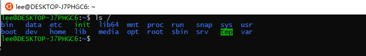
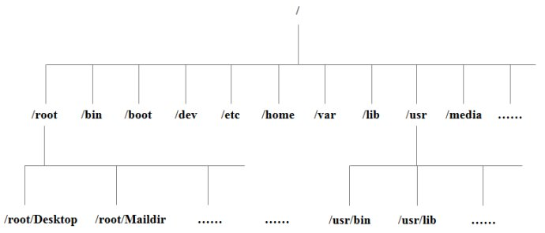

<!DOCTYPE html>
<html lang="en" class="loading">
<head><meta name="generator" content="Hexo 3.9.0">
    <meta charset="UTF-8">
    <meta http-equiv="X-UA-Compatible" content="IE=edge,chrome=1">
    <meta name="viewport" content="width=device-width, minimum-scale=1.0, maximum-scale=1.0, user-scalable=no">
    <title>linux目录结构 - 半夜的孤独月</title>
    <meta name="apple-mobile-web-app-capable" content="yes">
    <meta name="apple-mobile-web-app-status-bar-style" content="black-translucent">
    <meta name="google" content="notranslate">
    <meta name="keywords" content="Fechin,"> 
    <meta name="description" content="个人博客,Linux 系统目录结构打开windows子系统ubuntu linux子系统输入命令
ls /树状目录结构：  
以下是对这些目录的解释：
/bin：bin是Binary的缩写, 这个目录存放着最,"> 
    <meta name="author" content="半夜的孤独月"> 
    <link rel="alternative" href="atom.xml" title="半夜的孤独月" type="application/atom+xml"> 
    <link rel="icon" href="/img/favicon.png"> 
    <link rel="stylesheet" href="//cdn.jsdelivr.net/npm/gitalk@1/dist/gitalk.css">
    <link rel="stylesheet" href="/css/diaspora.css">
    <script async src="//pagead2.googlesyndication.com/pagead/js/adsbygoogle.js"></script>
    <script>
         (adsbygoogle = window.adsbygoogle || []).push({
              google_ad_client: "ca-pub-8691406134231910",
              enable_page_level_ads: true
         });
    </script>
    <script async custom-element="amp-auto-ads" src="https://cdn.ampproject.org/v0/amp-auto-ads-0.1.js">
    </script>
</head>
</html>
<body class="loading">
    <span id="config-title" style="display:none">半夜的孤独月</span>
    <div id="loader"></div>
    <div id="single">
    <div id="top" style="display: block;">
    <div class="bar" style="width: 0;"></div>
    <a class="icon-home image-icon" href="javascript:;" data-url="https://banyeDguduyue.github.io"></a>
    <div title="播放/暂停" class="icon-play"></div>
    <h3 class="subtitle">linux目录结构</h3>
    <div class="social">
        <!--<div class="like-icon">-->
            <!--<a href="javascript:;" class="likeThis active"><span class="icon-like"></span><span class="count">76</span></a>-->
        <!--</div>-->
        <div>
            <div class="share">
                <a title="获取二维码" class="icon-scan" href="javascript:;"></a>
            </div>
            <div id="qr"></div>
        </div>
    </div>
    <div class="scrollbar"></div>
</div>

    <div class="section">
        <div class="article">
    <div class='main'>
        <h1 class="title">linux目录结构</h1>
        <div class="stuff">
            <span>六月 12, 2019</span>
            
  <ul class="post-tags-list"><li class="post-tags-list-item"><a class="post-tags-list-link" href="/tags/linux/">linux</a></li><li class="post-tags-list-item"><a class="post-tags-list-link" href="/tags/学习/">学习</a></li></ul>


        </div>
        <div class="content markdown">
            <h1 id="Linux-系统目录结构"><a href="#Linux-系统目录结构" class="headerlink" title="Linux 系统目录结构"></a>Linux 系统目录结构</h1><p>打开windows子系统ubuntu linux子系统输入命令</p>
<pre><code>ls /</code></pre><p><br>树状目录结构：<br>  </p>
<h3 id="以下是对这些目录的解释："><a href="#以下是对这些目录的解释：" class="headerlink" title="以下是对这些目录的解释："></a>以下是对这些目录的解释：</h3><ul>
<li><p>/bin：<br>bin是Binary的缩写, 这个目录存放着最经常使用的命令。</p>
</li>
<li><p>/boot：<br>这里存放的是启动Linux时使用的一些核心文件，包括一些连接文件以及镜像文件。</p>
</li>
<li><p>/dev ：<br>dev是Device(设备)的缩写, 该目录下存放的是Linux的外部设备，在Linux中访问设备的方式和访问文件的方式是相同的。</p>
</li>
<li><p>/etc：<br>这个目录用来存放所有的系统管理所需要的配置文件和子目录。</p>
</li>
<li><p>/home：<br>用户的主目录，在Linux中，每个用户都有一个自己的目录，一般该目录名是以用户的账号命名的。</p>
</li>
<li><p>/lib：<br>这个目录里存放着系统最基本的动态连接共享库，其作用类似于Windows里的DLL文件。几乎所有的应用程序都需要用到这些共享库。</p>
</li>
<li><p>/lost+found：<br>这个目录一般情况下是空的，当系统非法关机后，这里就存放了一些文件。</p>
</li>
<li><p>/media：<br>linux系统会自动识别一些设备，例如U盘、光驱等等，当识别后，linux会把识别的设备挂载到这个目录下。</p>
</li>
<li><p>/mnt：<br>系统提供该目录是为了让用户临时挂载别的文件系统的，我们可以将光驱挂载在/mnt/上，然后进入该目录就可以查看光驱里的内容了。</p>
</li>
<li><p>/opt：<br>这是给主机额外安装软件所摆放的目录。比如你安装一个ORACLE数据库则就可以放到这个目录下。默认是空的。</p>
</li>
<li><p>/proc：<br>这个目录是一个虚拟的目录，它是系统内存的映射，我们可以通过直接访问这个目录来获取系统信息。<br>这个目录的内容不在硬盘上而是在内存里，我们也可以直接修改里面的某些文件，比如可以通过下面的命令来屏蔽主机的ping命令，使别人无法ping你的机器：</p>
</li>
<li><p>/root：<br>该目录为系统管理员，也称作超级权限者的用户主目录。</p>
</li>
<li><p>/sbin：<br>s就是Super User的意思，这里存放的是系统管理员使用的系统管理程序。</p>
</li>
<li><p>/selinux：<br>这个目录是Redhat/CentOS所特有的目录，Selinux是一个安全机制，类似于windows的防火墙，但是这套机制比较复杂，这个目录就是存放selinux相关的文件的。</p>
</li>
<li><p>/srv：<br>该目录存放一些服务启动之后需要提取的数据。</p>
</li>
<li><p>/sys：<br>这是linux2.6内核的一个很大的变化。该目录下安装了2.6内核中新出现的一个文件系统 sysfs 。sysfs文件系统集成了下面3种文件系统的信息：针对进程信息的proc文件系统、针对设备的devfs文件系统以及针对伪终端的devpts文件系统。该文件系统是内核设备树的一个直观反映。当一个内核对象被创建的时候，对应的文件和目录也在内核对象子系统中被创建。</p>
</li>
<li><p>/tmp：<br>这个目录是用来存放一些临时文件的。</p>
</li>
<li><p>/usr：<br>这是一个非常重要的目录，用户的很多应用程序和文件都放在这个目录下，类似于windows下的program files目录。</p>
</li>
<li><p>/usr/bin：<br>系统用户使用的应用程序。</p>
</li>
<li><p>/usr/sbin：<br>超级用户使用的比较高级的管理程序和系统守护程序。</p>
</li>
<li><p>/usr/src：<br>内核源代码默认的放置目录。</p>
</li>
<li><p>/var：<br>这个目录中存放着在不断扩充着的东西，我们习惯将那些经常被修改的目录放在这个目录下。包括各种日志文件。</p>
</li>
<li><p>/run：<br>是一个临时文件系统，存储系统启动以来的信息。当系统重启时，这个目录下的文件应该被删掉或清除。如果你的系统上有 /var/run 目录，应该让它指向 run。<br>在 Linux 系统中，有几个目录是比较重要的，平时需要注意不要误删除或者随意更改内部文件。/etc： 上边也提到了，这个是系统中的配置文件，如果你更改了该目录下的某个文件可能会导致系统不能启动。<br>/bin, /sbin, /usr/bin, /usr/sbin: 这是系统预设的执行文件的放置目录，比如 ls 就是在/bin/ls 目录下的。<br>值得提出的是，/bin, /usr/bin 是给系统用户使用的指令（除root外的通用户），而/sbin, /usr/sbin 则是给root使用的指令。<br>/var： 这是一个非常重要的目录，系统上跑了很多程序，那么每个程序都会有相应的日志产生，而这些日志就被记录到这个目录下，具体在/var/log 目录下，另外mail的预设放置也是在这里。</p>
</li>
</ul>
<h4 id="转自菜鸟教程学习linux顺便敲一把"><a href="#转自菜鸟教程学习linux顺便敲一把" class="headerlink" title="转自菜鸟教程学习linux顺便敲一把"></a>转自<a href="https://www.runoob.com/linux/linux-system-contents.html" title="linux" target="_blank" rel="noopener">菜鸟教程</a>学习linux顺便敲一把</h4>
            <!--[if lt IE 9]><script>document.createElement('audio');</script><![endif]-->
            <audio id="audio" loop="1" preload="auto" controls="controls" data-autoplay="true">
                <source type="audio/mpeg" src="">
            </audio>
            
                <ul id="audio-list" style="display:none">
                    
                        
                            <li title='0' data-url='http://tyst.migu.cn/public/product5th/product32/2019/05/1013/%E9%A2%84%E7%94%9F%E6%95%88%E5%A5%A5%E8%BF%90%E7%AC%AC46%E6%89%B93500%E9%A6%96_600547/%E6%A0%87%E6%B8%85%E9%AB%98%E6%B8%85/MP3_320_16_Stero/60054700498.mp3'></li>
                        
                    
                        
                            <li title='1' data-url='http://tyst.migu.cn/public/ringmaker01/n17/2017/07/%E9%A2%84%E7%94%9F%E6%95%88%E5%A5%A5%E8%BF%90%E7%AC%AC46%E6%89%B93500%E9%A6%96_600547/%E6%AD%8C%E6%9B%B2%E4%B8%8B%E8%BD%BD/MP3_320_16_Stero/%E5%85%8D%E8%B4%B9%E6%95%99%E5%AD%A6%E5%BD%95%E5%BD%B1%E5%B8%A6-%E5%91%A8%E6%9D%B0%E4%BC%A6.mp3'></li>
                        
                    
                </ul>
            
        </div>
        
    <div id='gitalk-container' class="comment link"
        data-ae='false'
        data-ci='ef8cdeca342133d3a396'
        data-cs='9b18d8920603d70ae9e14b05875281bcbf9e6755'
        data-r='banyeDguduyue.github.io'
        data-o='banyeDguduyue'
        data-a='banyeDguduyue'
        data-d='false'
    >查看评论</div>


    </div>
    
</div>


    </div>
</div>
</body>
<script src="//cdn.jsdelivr.net/npm/gitalk@1/dist/gitalk.min.js"></script>
<script src="//lib.baomitu.com/jquery/1.8.3/jquery.min.js"></script>
<script src="/js/plugin.js"></script>
<script src="/js/diaspora.js"></script>
<link rel="stylesheet" href="/highlightjs/styles/androidstudio.css">
<script src="/highlightjs/highlight.pack.min.js"></script>
<script>hljs.initHighlightingOnLoad();</script>
<link rel="stylesheet" href="/photoswipe/photoswipe.css">
<link rel="stylesheet" href="/photoswipe/default-skin/default-skin.css">
<script src="/photoswipe/photoswipe.min.js"></script>
<script src="/photoswipe/photoswipe-ui-default.min.js"></script>

<!-- Root element of PhotoSwipe. Must have class pswp. -->
<div class="pswp" tabindex="-1" role="dialog" aria-hidden="true">
    <!-- Background of PhotoSwipe. 
         It's a separate element as animating opacity is faster than rgba(). -->
    <div class="pswp__bg"></div>
    <!-- Slides wrapper with overflow:hidden. -->
    <div class="pswp__scroll-wrap">
        <!-- Container that holds slides. 
            PhotoSwipe keeps only 3 of them in the DOM to save memory.
            Don't modify these 3 pswp__item elements, data is added later on. -->
        <div class="pswp__container">
            <div class="pswp__item"></div>
            <div class="pswp__item"></div>
            <div class="pswp__item"></div>
        </div>
        <!-- Default (PhotoSwipeUI_Default) interface on top of sliding area. Can be changed. -->
        <div class="pswp__ui pswp__ui--hidden">
            <div class="pswp__top-bar">
                <!--  Controls are self-explanatory. Order can be changed. -->
                <div class="pswp__counter"></div>
                <button class="pswp__button pswp__button--close" title="Close (Esc)"></button>
                <button class="pswp__button pswp__button--share" title="Share"></button>
                <button class="pswp__button pswp__button--fs" title="Toggle fullscreen"></button>
                <button class="pswp__button pswp__button--zoom" title="Zoom in/out"></button>
                <!-- Preloader demo http://codepen.io/dimsemenov/pen/yyBWoR -->
                <!-- element will get class pswp__preloader--active when preloader is running -->
                <div class="pswp__preloader">
                    <div class="pswp__preloader__icn">
                      <div class="pswp__preloader__cut">
                        <div class="pswp__preloader__donut"></div>
                      </div>
                    </div>
                </div>
            </div>
            <div class="pswp__share-modal pswp__share-modal--hidden pswp__single-tap">
                <div class="pswp__share-tooltip"></div> 
            </div>
            <button class="pswp__button pswp__button--arrow--left" title="Previous (arrow left)">
            </button>
            <button class="pswp__button pswp__button--arrow--right" title="Next (arrow right)">
            </button>
            <div class="pswp__caption">
                <div class="pswp__caption__center"></div>
            </div>
        </div>
    </div>
</div>


  


</html>
